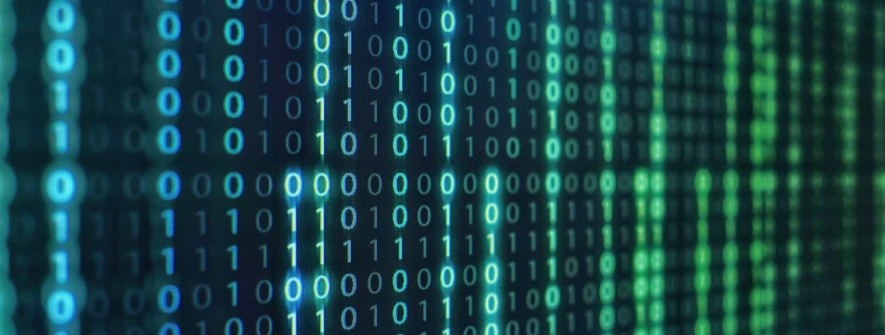

Hvordan fungerer det digitale?
Vi hjelper deg med å forstå vår digitale verden på en lett og oversiktlig måte
Innhold
Denne nettsiden inneholder grunnleggende kunnskap om hvordan datamaskiner opererer. Her vil du dykke ned i de grunnleggende komponentene som utgjør en datamaskin, fra prosessorer og minne til lagringsenheter og periferiutstyr. I tillegg vil vi utforske de mest sentrale tallsystemene som er nødvendig for all databehandling, inkludert binære og heksadesimale systemer. Enten du er nybegynner eller ønsker å friske opp kunnskapene dine, er dette stedet for å forstå den teknologiske ryggraden i vår moderne verden.
Komponenter
Her vil du lære om de grunnleggende komponentene i en datamaskin. Vi dekker alt fra prosessorer og minne til lagringsenheter og hovedkort, samt grafikkort og strømforsyning. Få en enkel og klar forståelse av hvordan disse delene samarbeider for å drive en datamaskin. Klikk her for å gå til siden om komponenter.
Tallsystemer
Her vil du lære om de ulike tallsystemene som brukes i datateknologi. Vi dekker både binære og heksadesimale systemer. Få en enkel og klar forståelse av hvordan disse systemene fungerer og brukes i databehandling, og test deg selv med interaktive oppgaver. Klikk her for å gå til siden om tallsystemer.
Vårt mål
Målet med denne nettsiden er å gi en grundig og lettforståelig opplæring i de grunnleggende elementene som utgjør den digitale verden. Vi ønsker å styrke din forståelse av datamaskinkomponenter og tallsystemer, slik at du får et solid fundament for videre læring og praktisk anvendelse. Gjennom interaktive ressurser, detaljerte forklaringer og praktiske eksempler, håper vi å inspirere og utruste deg med den kunnskapen du trenger for å navigere og trives i dagens teknologidrevne samfunn.
Om oss
Vi er en lidenskapelig gruppe teknologientusiaster og utdanningseksperter dedikert til å gjøre komplekse teknologiske konsepter tilgjengelige og forståelige for alle. Med solid bakgrunn innen IT, pedagogikk og kommunikasjon, jobber vi sammen for å gi deg den beste opplæringen om den digitale verden. Vårt team består av erfarne utviklere, lærere og skribenter som alle deler en felles visjon: å bygge bro mellom avansert teknologi og daglig bruk. Vi tror på kraften av kunnskap og er overbevist om at forståelse av teknologi er nøkkelen til å lykkes i dagens samfunn. Gjennom nøye utformede artikler, interaktive ressurser og praktiske eksempler, håper vi å inspirere og utdanne både nybegynnere og erfarne brukere. Enten du ønsker å lære om datamaskinkomponenter, tallsystemer, eller bare vil holde deg oppdatert med den nyeste teknologien, er vi her for å støtte deg på reisen. Bli med oss og oppdag den fascinerende verdenen av teknologi på en enkel og engasjerende måte!
Digitalisering i dag
Teknologi og digitalisering er hjørnesteiner i dagens samfunn, og deres innflytelse merkes overalt. Fra hvordan vi kommuniserer og jobber, til hvordan vi lærer og underholder oss, har teknologi revolusjonert hverdagen vår. Digitalisering skaper nye muligheter og effektiviserer prosesser i næringslivet, helsevesenet, utdanningssektoren og offentlig forvaltning. Ved å forstå og utnytte teknologiens potensial, kan vi forbedre vår produktivitet, innovasjon og livskvalitet. Teknologiske fremskritt som kunstig intelligens, Internet of Things (IoT) og cloud computing forandrer måten vi lever på, og åpner opp for spennende fremtidsutsikter. På vår nettside ønsker vi å gi deg innsikt i hvordan teknologi og digitalisering former dagens verden. Vi tilbyr enkle forklaringer og ressurser som hjelper deg å navigere og forstå den stadig skiftende teknologilandskapet, slik at du kan dra nytte av de mange fordelene som den digitale transformasjonen bringer.